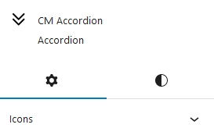
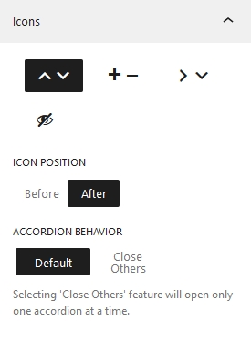

Accordion
Introduction
CM Accordion is a WordPress Blocks is designed to create accordion sections in WordPress Content Editor. Accordian can create organize data in a compact form. Users can expand or collapse its information that enhances user experience and make site space organized. It can be used in different sections like, FAQs, Questions Answers and much more.
Accordion Patterns
To use our blocks,use the + button and search for "CM Accordion" to access the block. Jumpstart your design with a choice of over five accordian pre-built templates, or customize your slider entirely from scratch.
Accordion Setting and Styles
Accordion options and customization is categorized into two i.e Setting and Styles. It can easily adjust settings and styles for both the accordion and its icon.

Accordion Setting
Accordion Setting can be adjusted from here

Icons
The appearance of accordion icons can be chosen from here. Four different accordion icons options are available for now. Top/Bottom Arrow, Plus/Minus, Right/Bottom Arrow and Hidden.
Icons Position
Position of the icons can be customized whether to keep it after the heading or before heading. By default the position of icons is kept after the heading.
Accordion Behaviour
Accordion Behaviour property specifies the condition if the other accordions—aside from the opened one—should be closed. When you set it to Default, all of the accordions open.
Accordion Icon Setting
Accordion icon setting is for the child element of Accordion. When this option is enabled, the accordion item that is selected will open. This setting can be implemented for each individual accordion item
Accordion Styles
The global styles for whole accordion heading and accordion can be controlled from here.
Typography
Here, you can add the font styles for whole accordion block.
Dimensions
Under the Dimensions, you can set the block gap between accordion item.
Global Border Settings
Here, we can add border to our accordion blocks globally. Extending the Border: We can also configure the border to a custom side. Similarly, the accordion's border radius can be adjusted on each side individually or on all sides.
Global Header Settings
Size
Accordion Header text size can be set from here.
Global Header Color Settings
You can change the text and background colors under Global Header Color Settings. It is also possible to set these colors for hover, active, and default. The default tab's color value will be used if hover and active color are not selected.
Global Content Settings
Here You can change the background color as well as text color of the content.
Accordion Item Styles
Accordion Items styles is the styles of child element of accordion.
Dimensions
Under dimensions, we can adjust the margin of single accordion items.
Accordion Item Header Settings
Accordion items header color settings follow to the same standards as their parent The Default color from accordion is implemented on the accordion item as well. Same goes with the hover as well as active. Similarly, if hover and active colors are not set on accordion item it takes the color value of default colors.
Accordion Item Content Settings
Accordion item content colors are inherited from accordion content colors unless you add it manually.